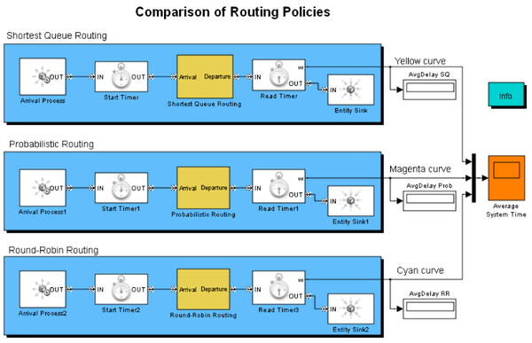

Comparison of Routing Policies
Contents
Overview
This model runs three similar queuing systems in parallel under three routing policies
Structure
This model compares the queuing system under three routing policies given below:
- Shortest Queue: Each entity advances to the shortest queue
- Probabilistic: Each entity is randomly routed to a queue
- Round robin: Entities alternate between the two queues
Results And Displays
The plot compares the average system time (end-to-end delay) to demonstrate the optimality of the Shortest Queue policy when all service time distributions are exponential. If this assumption is violated, a Shortest Queue policy is not necessarily optimal.